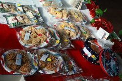

Vente de pâtisseries

Samedi, le 5 décembre, nous aurons notre vente annuelle de pâtisseries au profit de la fabrique. Nous vous accueillerons de 10h00 à 16h00 en notre église.
Paroisse Saint-Paul de Senneterre
Feuillet paroissial du 16 au 29 novembre 2026
Traditionnellement consacré aux défunts, le mois de novembre nous unit par la prière aux âmes du purgatoire, fortifiant notre espérance dans la force – silencieuse – de la grâce.
Forts en Dieu
Mois de novembre, mois des défunts, mois de la communion des saints, rendez-vous annuel pour élever au ciel une clameur de prière, pour vouloir être un levain qui agit silencieusement, sans violence, par une force intrinsèque. Mais pour être levain, il faut se débarrasser de la triple concupiscence dont parlait saint Jean (la chair, les yeux, l’orgueil de la vie). Bien des gens ne veulent pas être du levain car, pour être efficace, il doit disparaître dans la masse, passer inaperçu, sans applaudissements, sans égards humains. Pour être du levain, une grande vie intérieure, beaucoup d’esprit de sacrifice sont nécessaires.
Nos bonnes amies, les âmes du Purgatoire
Dans cette optique, la liturgie nous invite à nous unir aux âmes qui se sont endormies dans le Christ, sans toutefois le posséder encore. Elles ne vivent plus parmi nous mais, en Lui, nous nous tenons mutuellement comme un tout : avec elles, nous communions à la même charité et, selon la foi constante de l’Église, par l’échange de biens spirituels. Aussi les fidèles sont-ils encouragés, en ces jours particulièrement, à offrir des suffrages à leur intention, afin de réduire le temps de leur purification. En retour, à notre demande, elles nous obtiennent un bien d’une qualité inestimable : la force de vouloir ce que Dieu veut, même si cela doit nous coûter. Comment ne le pourraient-elles pas, elles qui, dans la douleur, repoussent les étroitesses de leur cœur, et apprennent à aimer Dieu pour lui-même, selon sa propre mesure et non la leur ? Comment ne le voudraient-elles pas, elles qui ne vibrent que pour la Béatitude, et dont l’épreuve stimule l’abnégation ?
Notre âme peut acquérir la dimension du ciel, disait saint Bernard. Pour elles, plus qu’une possibilité, c’est une certitude car le ciel se fait chaque jour plus grand au bout de leur chemin ; et le ciel, c’est vivre au diapason divin, c’est partager enfin le Bel Amour : aimer de manière généreuse, gratuite et désintéressée. Tel est le fruit savoureux de leur intercession.
Les locataires du Purgatoire sont disposées à nous faire partager leur joie laborieuse pour que nous, immédiatement après notre mort, nous puissions prendre possession du ciel sans pause ni soupir.
Qui prie beaucoup se sauve, Qui prie peu est en danger, Qui ne prie pas se damne. C’est la volonté qui compte. C’est elle qui est récompensée, non le sentiment.
Abbé Patrick Pégourier

Samedi, le 5 décembre, nous aurons notre vente annuelle de pâtisseries au profit de la fabrique. Nous vous accueillerons de 10h00 à 16h00 en notre église.
Notre mission est d’apporter de la joie aux personnes de notre entourage, surtout celles qui sont seules ou malades, par des visites, des appels téléphoniques, en soulignant les fêtes et toutes initiatives pour contrer l’isolement de nos aînés. Nous avons besoin de bénévoles pour remplir ce mandat.
Si vous êtes intéressé(e)s à joindre l’Équipe de la Joie, vous pouvez donner votre nom au secrétariat au 819-737-2045 ou encore le 819-737-4667. Merci !
Afin de garder notre Église bien vivante, votre don est une façon de la conserver au niveau financier pour s’assurer un lieu de culte accueillant et sécuritaire.
Vous pouvez également faire vos dons via la Poste en les adressant à
La Fabrique St-Paul, 700, 8e Avenue, local 206, Senneterre, J0Y 2M0
ou en vous rendant au secrétariat de la Fabrique.
Lundi, mercredi
et vendredi :
9h30 à 13h00
Le courage ne naît pas nos résolutions ni de la force de notre caractère. Il naît de la confiance en Celui qui nous précède, il naît de la foi en Jésus-Christ.
Pape Léon XIV
| Agenda liturgique du 15 au 29 novembre 2026 | |||||||||
| Dim 15 |
| ||||||||
| Lun 16 |
| ||||||||
| Mar 17 |
| ||||||||
| Mer 18 |
| ||||||||
| Jeu 19 |
| ||||||||
| Ven 20 |
| ||||||||
| Sam 21 |
| ||||||||
| Dim 22 |
| ||||||||
| Lun 23 |
| ||||||||
| Mar 24 |
| ||||||||
| Mer 25 |
| ||||||||
| Jeu 26 |
| ||||||||
| Ven 27 |
| ||||||||
| Sam 28 |
| ||||||||
| Dim 29 |
| ||||||||